from sklearn.linear_model import LinearRegression, Ridge, Lasso,\
ElasticNet, RidgeCV, LassoCV,\
ElasticNetCV, LogisticRegression
from sklearn.model_selection import train_test_split, KFold
from sklearn.preprocessing import StandardScaler, PolynomialFeatures
from sklearn.feature_selection import f_regression, SelectKBest,\
SequentialFeatureSelector,\
SelectFromModel
from sklearn.metrics import r2_score as r2, recall_score as recall,\
precision_score as precision
from CompStats.metrics import r2_score
import cvxpy as cp
import numpy as np
import pandas as pd
from matplotlib import pylab as plt
import matplotlib as mpl
import seaborn as sns
URL_DATOS = ('https://github.com/INGEOTEC/AprendizajeComputacional/'
'releases/download/datos-v1')
PALETTE = mpl.cm.Paired3 Regresión y Regularización
El objetivo de la unidad es evaluar la regresión lineal por su capacidad de predecir observaciones no vistas, comprender el compromiso entre sesgo y varianza, aplicar las regularizaciones Ridge, Lasso y Elastic Net seleccionando su hiperparámetro con validación cruzada, seleccionar variables y resolver un problema de política de predicción.
Paquetes usados
3.1 Introducción
Quien ha cursado Econometría conoce los Mínimos Cuadrados Ordinarios (MCO) como la herramienta para estimar \(\hat\beta\), interpretarlo, calcular su error estándar y probar si es distinto de cero. En este capítulo el mismo modelo se usa con otro propósito. Siguiendo a Mullainathan y Spiess (2017), el objetivo ya no es \(\hat\beta\) sino \(\hat y\): el modelo se evalúa por la calidad de sus predicciones en el conjunto de prueba \(\mathcal G\) (Sección 2.2), con las medidas de Sección 2.4, y su complejidad no se controla especificando a mano qué variables entran, sino con regularización y con validación cruzada (Sección 2.5). La referencia general sobre regularización es Hastie et al. (2009), cuyo capítulo 3 es de acceso libre.
El problema que guía el capítulo es predecir la tasa de abandono escolar de cada secundaria a partir de las características del plantel (Sección B.1.4), para decidir a qué planteles ofrecer primero un programa de tutorías o de becas. Es un prediction policy problem en el sentido de Kleinberg et al. (2015) (Sección 1.2): la decisión necesita saber cuáles planteles tienen una tasa de abandono alta, \(\hat y\), y no el efecto causal que tendría modificar alguna de sus características.
El capítulo presenta primero MCO y su deducción por máxima verosimilitud; después, el compromiso entre sesgo y varianza que explica por qué un modelo con más variables no siempre predice mejor; sigue con las regularizaciones Ridge, Lasso y Elastic Net y con la selección de su hiperparámetro \(\lambda\) por validación cruzada; continúa con la selección de variables y con la razón por la cual los coeficientes de un modelo regularizado no se interpretan como efectos; y termina con la focalización de un programa social, un problema de clasificación donde la regularización sirve para pedir pocas variables.
3.2 Datos: Abandono Escolar
Los datos son los de Educación, descritos en la ficha del apéndice (Sección B.1.4), y se leen directamente del release datos-v1.
educacion = pd.read_csv(f'{URL_DATOS}/sep_f911_educacion.csv.gz')La columna clave_cct identifica al plantel y no es una variable predictora, por lo que se descarta junto con la variable que se quiere predecir. También se descartan las columnas constantes, que no aportan información y que hacen singular a la matriz \(X^\intercal X\); en lugar de listarlas a mano se detectan con el siguiente código.
constantes = [c for c in educacion.columns if educacion[c].nunique() == 1]
X = educacion.drop(columns=['tasa_abandono', 'clave_cct'] + constantes)
y = educacion['tasa_abandono'].to_numpy()Las columnas laboratorios, talleres son constantes. Por otro lado, la regresión necesita números y varias de las variables son texto (la entidad, el sostenimiento, el tipo de servicio, el turno y la organización de los docentes). Cada categoría se convierte en una variable indicadora que vale uno cuando el plantel pertenece a esa categoría y cero en otro caso (one-hot; en econometría, variables dummy). Por cada variable se omite una categoría de referencia, pues de lo contrario la suma de las indicadoras sería idéntica a la constante del modelo y la matriz \(X^\intercal X\) no tendría inversa.
X = pd.get_dummies(X, drop_first=True, dtype=float)
columnas = X.columnsLa matriz de diseño tiene \(N=\) \(26689\) renglones y \(d=\) \(56\) columnas. El siguiente paso es separar el conjunto de entrenamiento \(\mathcal T\) del de prueba \(\mathcal G\) (Sección 2.2) y estandarizar las columnas para que tengan media cero y desviación estándar uno. La estandarización utiliza estadísticas de los datos, por lo que se ajusta solamente con \(\mathcal T\) y después se aplica a \(\mathcal G\); si se ajustara con todos los datos, información del conjunto de prueba influiría en el entrenamiento. La codificación de las categorías, en cambio, no aprende nada de \(y\), y por eso se puede hacer antes de separar los datos y así garantizar las mismas columnas en ambos conjuntos.
T, G, y_t, y_g = train_test_split(X.to_numpy(), y, test_size=0.2,
random_state=0)
escala = StandardScaler().fit(T)
T = escala.transform(T)
G = escala.transform(G)Se estandarizan todas las columnas, incluidas las indicadoras, para que la penalización de las secciones siguientes trate a todos los coeficientes en la misma escala; es una decisión discutible, porque un coeficiente de una indicadora estandarizada ya no se lee como “el efecto de pertenecer a la categoría”. Como el objetivo es predecir, esta lectura no se necesita.
3.3 Mínimos Cuadrados Ordinarios
El estimador de MCO es el que se conoce de econometría; la diferencia entre clasificación y regresión como se describió en la Sección 1.6 es que en regresión \(\mathcal Y \in \mathbb R.\) Para ponerlo en el contexto de los métodos paramétricos, se asume que \(\mathcal Y \sim \mathcal N(\mathbf w \cdot \mathbf x + \epsilon, \sigma^2)\), de tal manera que \(y = \mathbb E[\mathcal N(\mathbf w \cdot \mathbf x + \epsilon, \sigma^2)].\)
Trabajando con \(y = \mathbb E[\mathcal N(\mathbf w \cdot \mathbf x + \epsilon, \sigma^2)],\) se considera lo siguiente \(y = \mathbb E[\mathcal N(\mathbf w \cdot \mathbf x, 0) + \mathcal N(0, \sigma^2)]\) que implica que el error \(\epsilon\) es independiente de \(\mathbf x\), lo cual se transforma en \(y = \mathbf w \cdot \mathbf x + \mathbb E[\epsilon],\) donde \(\mathbb E[\epsilon]=0.\) Por lo tanto \(y = \mathbf w \cdot \mathbf x.\)
La función de densidad de probabilidad de una Gaussiana corresponde a
\[ f(\alpha) = \frac{1}{\sigma \sqrt{2 \pi}} \exp{-\frac{1}{2} (\frac{\alpha - \mu}{\sigma})^2}, \]
donde \(\alpha\), en el caso de regresión, corresponde a \(\mathbf w \cdot \mathbf x\) (i.e., \(\alpha = \mathbf w \cdot \mathbf x\)).
Utilizando el método de verosimilitud el cual corresponde a maximizar
\[ \begin{split} \mathcal L(\mathbf w, \sigma) &= \prod_{(\mathbf x, y) \in \mathcal D} f(\mathbf w \cdot \mathbf x) \\ &= \prod_{(\mathbf x, y) \in \mathcal D} \frac{1}{\sigma \sqrt{2\pi}} \exp{(-\frac{1}{2} (\frac{\mathbf w \cdot \mathbf x - y}{\sigma})^2)} \\ \ell(\mathbf w, \sigma) &= \sum_{(\mathbf x, y) \in \mathcal D}\log \frac{1}{\sigma \sqrt{2\pi}} -\frac{1}{2} (\frac{\mathbf w \cdot \mathbf x - y}{\sigma})^2 \\ &= - \frac{1}{2\sigma^2} \sum_{(\mathbf x, y) \in \mathcal D} (\mathbf w \cdot \mathbf x - y)^2 - N \log \frac{1}{\sigma \sqrt{2\pi}}. \end{split} \]
El valor de cada parámetro se obtiene al calcular la derivada parcial con respecto al parámetro de interés, entonces se resuelven \(d\) derivadas parciales para cada uno de los coeficientes \(\mathbf w\). En este proceso se observa que el término \(N \log \frac{1}{\sigma \sqrt{2\pi}}\) no depende de \(\mathbf w\) entonces no afecta el máximo siendo una constante en el proceso de derivación y por lo tanto se desprecia. Lo mismo pasa para la constante \(\frac{1}{2\sigma^2}\). Por lo tanto, maximizar la verosimilitud equivale a minimizar \(\sum_{(\mathbf x, y) \in \mathcal D} (\mathbf w \cdot \mathbf x - y)^2\), la suma de los errores al cuadrado. Una vez obtenidos los parámetros \(\mathbf w\) se obtiene el valor \(\sigma.\)
Una manera equivalente de plantear este problema es como un problema de álgebra lineal, donde se tiene una matriz de observaciones \(X\) que se construyen con las variables \(\mathbf x\) de \(\mathcal X,\) donde cada renglón de \(X\) es una observación, y el vector dependiente \(\mathbf y\) donde cada elemento es la respuesta correspondiente a la observación.
Viéndolo como un problema de álgebra lineal lo que se tiene es
\[ X \mathbf w = \mathbf y, \]
donde para identificar \(\mathbf w\) se puede realizar lo siguiente
\[ X^\intercal X \mathbf w = X^\intercal \mathbf y. \]
Despejando \(\mathbf w\) se tiene
\[ \mathbf w = (X^\intercal X)^{-1} X^\intercal \mathbf y. \]
Previamente se ha presentado el error estándar de cada parámetro que se ha estimado, en caso de la regresión el error estándar (Sección A.1.3) de \(w_j\) es \(\sigma \sqrt{(X^\intercal X)^{-1}_{jj}}.\)
3.3.1 Ejemplo: Abandono Escolar
Con el conjunto de entrenamiento T y y_t se estiman los parámetros de la regresión lineal, tal y como se muestra a continuación.
m = LinearRegression().fit(T, y_t)
w = m.coef_
w_0 = m.intercept_Los tres coeficientes con mayor valor absoluto corresponden a las variables tipo_sostenimiento_federal transferido (\(2.22\)), turno_vespertino (\(1.70\)), tipo_sostenimiento_federal transferido-estatal (\(1.49\)), y el término independiente es \(w_0=6.86\). Como todas las columnas están estandarizadas, \(w_0\) es la media de y_t, que vale \(6.86\): un plantel promedio en todas las variables tiene la tasa de abandono promedio.
Siguiendo la costumbre de la econometría, la pregunta es si estos coeficientes son estadísticamente distintos de cero. Para contestarla se estima \(\sigma\) como la desviación estándar del error y el error estándar de cada coeficiente se calcula con la inversa de la matriz \(X^\intercal X\); se utiliza la pseudoinversa (np.linalg.pinv) por estabilidad numérica.
error = y_t - m.predict(T)
sigma = np.std(error)
se = sigma * np.sqrt(np.diag(np.linalg.pinv(T.T @ T)))
t = w / seEl cociente t es el estadístico \(t\) de cada coeficiente; \(22\) de los \(56\) coeficientes tienen un valor absoluto menor que \(2\), es decir, no son estadísticamente distintos de cero. En econometría esto llevaría a reespecificar el modelo; aquí la pregunta es otra: si quitar esas variables mejora la predicción.
La predicción del conjunto de prueba y su rendimiento, medido con \(R^2\) (Ecuación 2.7), se obtienen con las siguientes instrucciones. La función r2_score de CompStats regresa un objeto con el valor de la medida y su error estándar, calculado con bootstrap, lo cual permite comparar algoritmos más adelante.
hy = m.predict(G)
r2_ols = r2_score(y_g, hy, name='MCO')El \(R^2\) de MCO en el conjunto de prueba es \(0.1433\), con un error estándar de \(0.0188\). Es un valor bajo en términos absolutos: las características del plantel que registra el Formato 911 explican una parte pequeña de las diferencias en la tasa de abandono, lo cual es frecuente en problemas sociales. La Figura 3.1 presenta las predicciones contra los valores reales, junto con la recta identidad que correspondería a un modelo sin error.
Código
fig, ax = plt.subplots(figsize=(5, 5))
sns.scatterplot(x=hy, y=y_g, alpha=0.3, ax=ax)
lim = [min(y_g.min(), hy.min()), max(y_g.max(), hy.max())]
ax.plot(lim, lim, color='k')
_ = ax.set(xlabel='Predicción', ylabel='Tasa de abandono')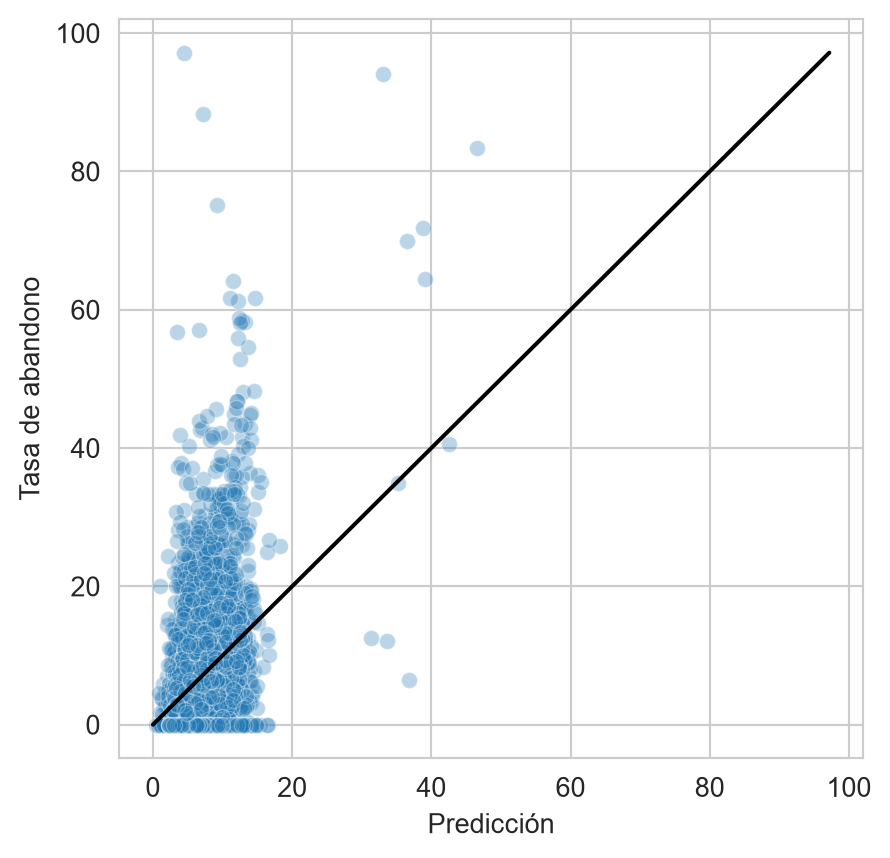
Las predicciones están comprimidas en un rango estrecho alrededor de la media, mientras que las tasas observadas llegan a valores mucho mayores; el modelo subestima a la mayoría de los planteles con tasas altas, que son justamente los que un programa quisiera identificar.
3.3.2 Modelo Reducido
Siguiendo la idea de la econometría, se estima un segundo modelo con las variables que sí son estadísticamente distintas de cero.
mask = np.fabs(t) >= 2
m2 = LinearRegression().fit(T[:, mask], y_t)
hy2 = m2.predict(G[:, mask])La Figura 3.2 compara el rendimiento de los dos modelos en el conjunto de prueba.
r2_ols(hy2, name='Reducido')
r2_ols.plot(comp_legend='Comparación', winner_legend='Mejor',
tie_legend='Equivalente', loser_legend='Diferente',
alg_legend='Algoritmo', var_name='Rendimiento')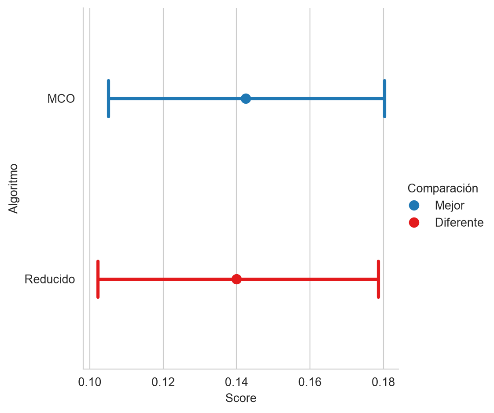
La figura se lee de la siguiente manera: el punto es el \(R^2\) de cada modelo, el segmento su intervalo de confianza obtenido con bootstrap y los colores indican si la diferencia con el mejor modelo es estadísticamente significativa. El modelo reducido, con \(34\) variables, tiene un \(R^2\) de \(0.1408\), \(0.0026\) menos que el modelo completo, y la figura lo marca como diferente del mejor. La diferencia es pequeña en magnitud, pero quitar las variables “no significativas” no mejora la predicción; incluso la perjudica un poco. La significancia individual de los coeficientes no es, entonces, un criterio para predecir. Esto motiva los métodos de las siguientes secciones, que controlan la complejidad del modelo con un criterio de predicción y no con pruebas de hipótesis.
3.4 Sesgo y Varianza
El error esperado de predicción de un modelo \(\hat f\) en una observación nueva se puede descomponer en tres partes
\[ \mathbb E[(y - \hat f(\mathbf x))^2] = \underbrace{(\mathbb E[\hat f(\mathbf x)] - f(\mathbf x))^2}_{\text{sesgo}^2} + \underbrace{\mathbb E[(\hat f(\mathbf x) - \mathbb E[\hat f(\mathbf x)])^2]}_{\text{varianza}} + \underbrace{\sigma^2}_{\text{ruido}}, \tag{3.1}\]
donde \(f\) es la función verdadera, \(\sigma^2\) es la varianza del ruido que ningún modelo puede eliminar y el valor esperado de \(\hat f\) es sobre las muestras con las que se podría haber entrenado el modelo. En palabras, un modelo rígido se equivoca de manera parecida en todas las muestras (sesgo), mientras que un modelo flexible cambia mucho de una muestra a otra (varianza). Es el mismo fenómeno que muestran la Figura 1.11 y la Figura 1.12 de la Introducción.
Solo en una simulación se conoce la función verdadera y se pueden repetir las muestras, por lo que el compromiso se ilustra con el problema sintético de regresión del apéndice, \(f(x) = \sin(x) + 0.3 \cos(3x)\) (Figura B.12). Se generan \(100\) muestras de \(30\) puntos con ruido gaussiano de desviación estándar \(0.3\) y en cada una se ajustan polinomios de grado \(1\), \(3\) y \(12\), es decir, una regresión lineal sobre las variables \(x, x^2, \ldots, x^g\).
rng = np.random.default_rng(0)
x_malla = np.linspace(-5, 5, 200)
f = lambda x: np.sin(x) + 0.3 * np.cos(3 * x)
grados = [1, 3, 12]
predicciones = {g: [] for g in grados}
for _ in range(100):
x = rng.uniform(-5, 5, size=30)
y_sim = f(x) + rng.normal(scale=0.3, size=x.shape[0])
for g in grados:
pol = PolynomialFeatures(degree=g)
X_pol = pol.fit_transform(x[:, None])
modelo = LinearRegression().fit(X_pol, y_sim)
predicciones[g].append(modelo.predict(pol.transform(x_malla[:, None])))La Figura 3.3 muestra, para cada grado, la función verdadera en negro, las curvas ajustadas en cada muestra en gris y su promedio en color.
Código
fig, axs = plt.subplots(1, 3, figsize=(12, 4), sharey=True)
for ax, g in zip(axs, grados):
P = np.array(predicciones[g])
for p in P:
ax.plot(x_malla, p, color='gray', alpha=0.1)
ax.plot(x_malla, f(x_malla), color='k')
ax.plot(x_malla, P.mean(axis=0), color=PALETTE(1))
ax.set_ylim(-2, 2)
_ = ax.set(xlabel='$x$', title=f'Grado {g}')
_ = axs[0].set(ylabel='$y$')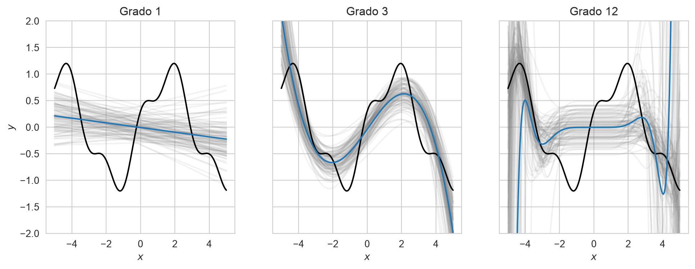
| Grado | Sesgo\(^2\) | Varianza |
|---|---|---|
| 1 | \(0.5455\) | \(0.0469\) |
| 3 | \(0.1822\) | \(0.0641\) |
| 12 | \(32.3528\) | \(647.3958\) |
El polinomio de grado \(1\) es una recta: el promedio de sus predicciones está lejos de la función verdadera (sesgo alto) pero las rectas de las diferentes muestras se parecen entre sí (varianza baja). El polinomio de grado \(12\) hace lo contrario: puede seguir cada muestra, pero cada muestra produce una curva muy distinta y las curvas oscilan de manera violenta, sobre todo en los extremos, donde varias se salen de la figura (varianza altísima). Con una varianza tan grande, el promedio de las \(100\) curvas todavía está dominado por unas pocas curvas extremas y por eso su sesgo estimado también es grande. El grado \(3\) tiene el mejor equilibrio entre ambos, tal y como lo cuantifica la Tabla 3.1: es el de menor suma de sesgo\(^2\) y varianza. La regularización que se presenta a continuación es una manera de reducir la varianza a cambio de aceptar un poco de sesgo.
3.5 Regresión Ridge
La regresión Ridge (Hoerl y Kennard (1970)) controla la varianza penalizando el tamaño de los coeficientes. En lugar de minimizar solamente la suma de los errores al cuadrado, minimiza
\[ \min_{\mathbf w, w_0} \mid\mid \mathbf y - X\mathbf w - w_0 \mid\mid_2^2 + \lambda \mid\mid \mathbf w \mid\mid_2^2, \tag{3.2}\]
donde \(\lambda \ge 0\) controla cuánto se encogen los coeficientes hacia cero; con \(\lambda = 0\) se obtiene MCO. Esta función objetivo tiene solución cerrada, \(\mathbf w = (X^\intercal X + \lambda I)^{-1} X^\intercal \mathbf y\) (cuando las columnas están centradas, que es el caso aquí, el término independiente es la media de \(\mathbf y\)). La penalización depende de la escala de cada variable, pues un coeficiente de una variable medida en unidades pequeñas es grande y se penalizaría más; por eso las variables se estandarizaron en la Sección 3.2. En scikit-learn el hiperparámetro \(\lambda\) se llama alpha; en el texto se usa \(\lambda\) y en el código alpha.
ridge = Ridge(alpha=10).fit(T, y_t)La norma \(L_2\) de los coeficientes de MCO es \(4.8202\) y la del modelo Ridge con \(\lambda=10\) es \(3.4774\), es decir, los coeficientes se encogieron. La Figura 3.4 muestra cada uno de los coeficientes en función de \(\lambda\); se omite la leyenda porque son demasiadas variables.
lambdas = np.logspace(-2, 5, 50)
caminos = np.array([Ridge(alpha=l).fit(T, y_t).coef_ for l in lambdas])Código
fig, ax = plt.subplots(figsize=(6, 4))
ax.plot(lambdas, caminos)
ax.set_xscale('log')
_ = ax.set(xlabel='$\\lambda$', ylabel='Coeficiente')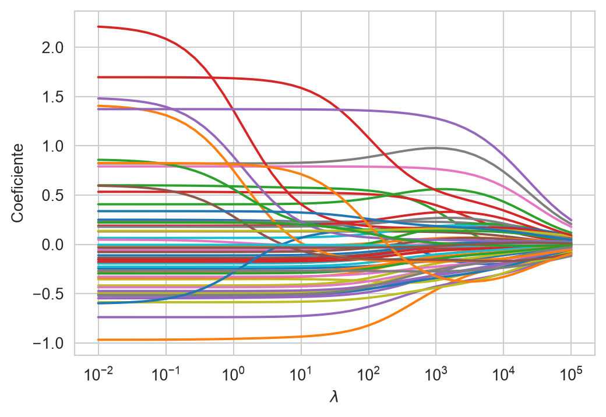
Todos los coeficientes tienden a cero de manera suave conforme crece \(\lambda\), pero ninguno llega a ser exactamente cero. Ridge reduce la varianza sin descartar variables.
3.6 Lasso
Lasso (Tibshirani (1996)) cambia la penalización por la norma \(L_1\) de los coeficientes
\[ \min_{\mathbf w, w_0} \frac{1}{2N} \mid\mid \mathbf y - X\mathbf w - w_0 \mid\mid_2^2 + \lambda \mid\mid \mathbf w \mid\mid_1, \tag{3.3}\]
donde se utiliza la normalización \(\frac{1}{2N}\) porque es la que usa la clase Lasso de scikit-learn. La norma \(L_1\) hace que algunos coeficientes sean exactamente cero, por lo que Lasso selecciona variables al mismo tiempo que ajusta el modelo. A diferencia de Ridge, no tiene una solución cerrada; se resuelve numéricamente, en scikit-learn por descenso por coordenadas (la idea general de la optimización numérica se presenta en Capítulo 8).
lasso = Lasso(alpha=0.5).fit(T, y_t)Con \(\lambda=0.5\), \(49\) de los \(56\) coeficientes son exactamente cero y las variables que sobreviven son alumnos, pct_primer_grado, entidad_Michoacán, entidad_Oaxaca, tipo_servicio_general, turno_matutino, organizacion_docentes_multigrado. La Figura 3.5 muestra el camino de los coeficientes, y la Figura 3.6 el número de coeficientes distintos de cero en función de \(\lambda\).
lambdas = np.logspace(-3, 1, 50)
caminos = np.array([Lasso(alpha=l, max_iter=5000).fit(T, y_t).coef_
for l in lambdas])Código
fig, ax = plt.subplots(figsize=(6, 4))
ax.plot(lambdas, caminos)
ax.set_xscale('log')
_ = ax.set(xlabel='$\\lambda$', ylabel='Coeficiente')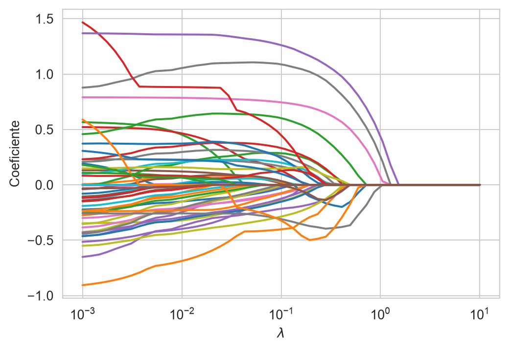
Código
fig, ax = plt.subplots(figsize=(6, 4))
ax.plot(lambdas, (caminos != 0).sum(axis=1))
ax.set_xscale('log')
_ = ax.set(xlabel='$\\lambda$', ylabel='Coeficientes distintos de cero')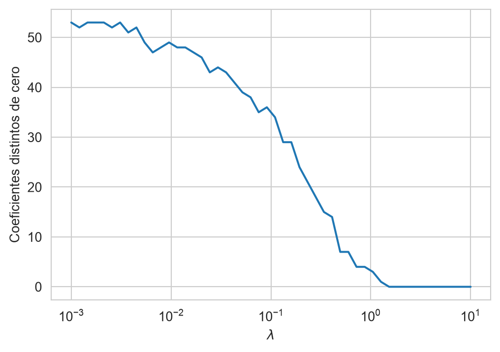
En contraste con Ridge, los coeficientes de Lasso llegan a cero de manera abrupta y, para \(\lambda\) suficientemente grande, el modelo se reduce a la media de \(\mathbf y\) (todos los coeficientes son cero).
NotaLasso como problema con restricción
La forma penalizada de Lasso es equivalente a un problema de optimización con restricción: minimizar el error sujeto a que la norma \(L_1\) de los coeficientes no supere un valor \(\gamma\) (a cada \(\lambda\) le corresponde un \(\gamma\)), tal y como se muestra en la Ecuación 3.4.
\[ \begin{split} \min & \mid\mid \mathbf y - (X \mathbf w + w_0) \mid\mid_2 \\ \text{sujeto a} & \\ & \mid \mid \mathbf w \mid \mid_1 \leq \gamma \\ \end{split} \tag{3.4}\]
Tener el problema como uno de optimización permite incluir de manera eficiente otras restricciones. El siguiente código codifica y resuelve el problema de la Ecuación 3.4 con la librería CVXPY (Diamond y Boyd (2016)). Para que el solver resuelva el problema en poco tiempo se utiliza una submuestra de \(2\,000\) renglones de \(\mathcal T\).
sub = rng.choice(T.shape[0], size=2000, replace=False)
T_sub, y_sub = T[sub], y_t[sub]
w_cp = cp.Variable(T.shape[1])
w0_cp = cp.Variable(1)
gamma = cp.Parameter(nonneg=True)
gamma.value = 20
objetivo = cp.Minimize(cp.norm(y_sub - (T_sub @ w_cp + w0_cp), 2))
problema = cp.Problem(objetivo, [cp.norm(w_cp, 1) <= gamma])
_ = problema.solve()La norma \(L_1\) de los coeficientes de MCO es \(25.9484\); con \(\gamma=20\) la restricción está activa y \(7\) de los coeficientes quedan por debajo de \(10^{-5}\), es decir, son prácticamente cero, y la norma \(L_1\) de la solución es \(20.0000\).
3.6.1 Elastic Net
Elastic Net (Zou y Hastie (2005)) combina las dos penalizaciones
\[ \min_{\mathbf w, w_0} \frac{1}{2N} \mid\mid \mathbf y - X\mathbf w - w_0 \mid\mid_2^2 + \lambda \left( \rho \mid\mid \mathbf w \mid\mid_1 + \frac{1 - \rho}{2} \mid\mid \mathbf w \mid\mid_2^2 \right), \tag{3.5}\]
donde el parámetro \(\rho\) (l1_ratio en scikit-learn) mezcla las dos normas: con \(\rho=1\) es Lasso y con \(\rho\) cercano a cero se comporta como Ridge. Es útil cuando hay grupos de variables correlacionadas; Lasso tiende a elegir una de ellas, casi al azar, mientras que Elastic Net reparte el coeficiente entre las variables del grupo.
enet = ElasticNet(alpha=0.5, l1_ratio=0.5, max_iter=5000).fit(T, y_t)Este modelo, con \(\lambda=0.5\) y \(\rho=0.5\), tiene \(34\) coeficientes exactamente cero.
3.7 Selección de \(\lambda\) por Validación Cruzada
El parámetro \(\lambda\) es un hiperparámetro: no se estima al minimizar el error de entrenamiento (siempre elegiría \(\lambda=0\)) y tampoco debe elegirse con el conjunto de prueba \(\mathcal G\), pues este se reserva para medir el rendimiento final (Sección 2.5). Se elige con \(k\) iteraciones de validación cruzada (Sección 2.5.1) dentro de \(\mathcal T\): para cada valor de \(\lambda\) se entrena con \(k-1\) partes, se predice la parte restante y se calcula el error cuadrático medio; el valor elegido es el que lo minimiza. El siguiente código muestra el procedimiento a mano para Lasso.
kfold = KFold(n_splits=5, shuffle=True, random_state=0)
lambdas = np.logspace(-3, 1, 30)
error_cv = []
for l in lambdas:
hy_v = np.zeros_like(y_t)
for tr, vs in kfold.split(T):
modelo = Lasso(alpha=l, max_iter=5000).fit(T[tr], y_t[tr])
hy_v[vs] = modelo.predict(T[vs])
error_cv.append(np.mean((y_t - hy_v)**2))
lambda_opt = lambdas[np.argmin(error_cv)]La Figura 3.7 muestra el error de validación en función de \(\lambda\); el valor que lo minimiza es \(\lambda=\) \(0.0092\).
Código
fig, ax = plt.subplots(figsize=(6, 4))
ax.plot(lambdas, error_cv)
ax.axvline(lambda_opt, color='k', linestyle='--')
ax.set_xscale('log')
_ = ax.set(xlabel='$\\lambda$', ylabel='Error cuadrático medio de validación')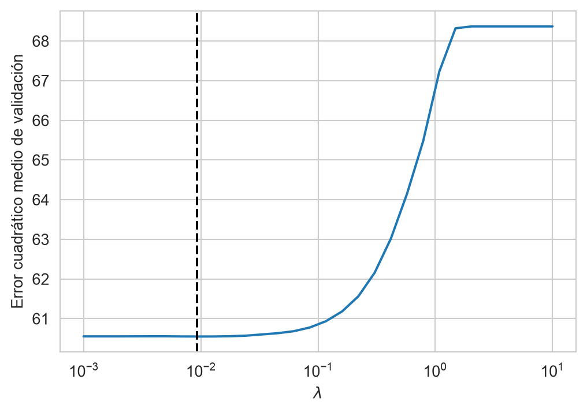
Los algoritmos LassoCV, RidgeCV y ElasticNetCV hacen lo mismo que el ciclo anterior, y el valor seleccionado de \(\lambda\) queda en el atributo alpha_.
lasso_cv = LassoCV(cv=kfold, alphas=lambdas, max_iter=5000).fit(T, y_t)
ridge_cv = RidgeCV(alphas=np.logspace(-2, 5, 30), cv=kfold).fit(T, y_t)
enet_cv = ElasticNetCV(l1_ratio=[0.2, 0.5, 0.8], cv=kfold,
max_iter=5000).fit(T, y_t)LassoCV selecciona \(\lambda=\) \(0.0092\), que coincide con el valor calculado a mano; RidgeCV selecciona \(\lambda=\) \(126.8961\), y ElasticNetCV selecciona \(\lambda=\) \(0.0144\) con \(\rho=\) \(0.5\). Con estos valores, Lasso mantiene \(50\) coeficientes distintos de cero y Elastic Net \(50\), de un total de \(56\).
La Figura 3.8 compara, en el conjunto de prueba, el rendimiento de MCO y del modelo reducido (Sección 3.3.2) con el de Ridge, Lasso y Elastic Net con el \(\lambda\) seleccionado por validación cruzada.
r2_ols(ridge_cv.predict(G), name='Ridge')
r2_ols(lasso_cv.predict(G), name='Lasso')
r2_ols(enet_cv.predict(G), name='Elastic Net')
r2_ols.plot(comp_legend='Comparación', winner_legend='Mejor',
tie_legend='Equivalente', loser_legend='Diferente',
alg_legend='Algoritmo', var_name='Rendimiento')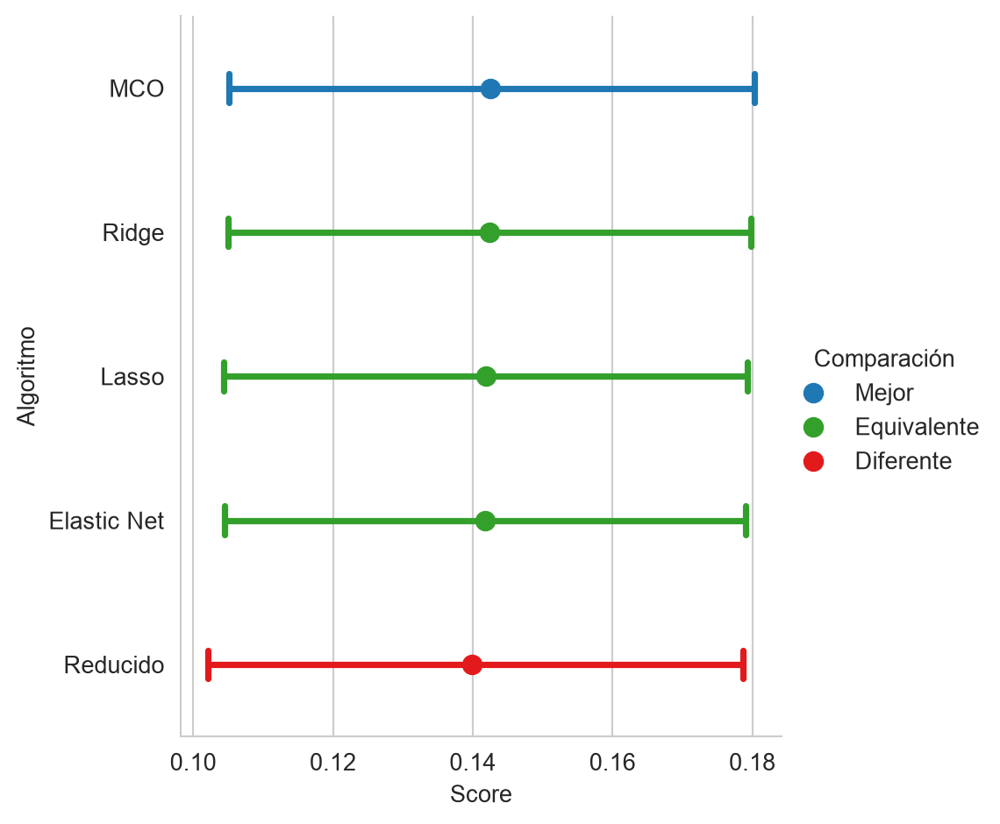
Con \(N=\) \(26689\) y \(d=\) \(56\) ninguno de los modelos regularizados supera a MCO: Ridge, Lasso y Elastic Net son estadísticamente equivalentes a él, y el único modelo que la figura marca como diferente es el reducido. Con muchos datos y pocas variables MCO ya tiene poca varianza y la regularización tiene poco que corregir. La ganancia de Lasso, cuando existe, es un modelo con menos variables y el mismo rendimiento, que es lo que interesa cuando el modelo se aplica con información que hay que recabar; aquí es modesta, pues conserva \(50\) de las \(56\) variables. El \(R^2\) es bajo en todos los casos: ningún método puede extraer de las características del plantel más información de la que tienen.
3.8 Selección de Variables
Lasso ya selecciona variables al mismo tiempo que ajusta el modelo. Esta sección presenta los procedimientos clásicos de selección (filtros estadísticos, búsqueda hacia adelante y hacia atrás, y selección mediante un modelo) y los compara con lo que eligió Lasso. Todos parten de la idea de que existen variables que no contribuyen a la solución o cuyo aporte ya está dado por otras. Esto trae como consecuencia, en el mejor de los casos, un mayor costo computacional o de recolección y, en uno menos afortunado, un modelo con un rendimiento menor al que se hubiera obtenido seleccionando las variables.
3.8.1 Basada en Estadísticas
Una manera de seleccionar es descartar las variables que no tienen relación con la respuesta. En regresión, la prueba es la estadística \(F\) de la regresión lineal simple de \(y\) sobre cada variable, cuya hipótesis nula es que el coeficiente es cero; está implementada en la función f_regression. (En clasificación la prueba equivalente es Kruskal-Wallis, o ANOVA si se supone normalidad.) Con esas estadísticas se pueden ordenar las variables y seleccionar las \(k\) mejores con SelectKBest.
f_est, p_valores = f_regression(T, y_t)
sel = SelectKBest(score_func=f_regression, k=10).fit(T, y_t)
seleccionadas = columnas[sel.get_support()]Las diez variables con mayor estadística \(F\) son alumnos, grupos, docentes, pct_primer_grado, aulas_en_uso, entidad_Oaxaca, tipo_sostenimiento_particular, tipo_servicio_general, tipo_servicio_telesecundaria, organizacion_docentes_multigrado. De ellas, \(8\) están entre las que conserva Lasso con el \(\lambda\) elegido por validación cruzada.
3.8.1.1 Ventajas y Limitaciones
Las técnicas basadas en estadísticas requieren de pocos recursos computacionales y están basadas en pruebas que permiten saber cuáles son las razones de su funcionamiento. Estas fortalezas también son origen de sus debilidades: observan las variables de manera aislada y no consideran que pueden interactuar. Por otro lado, la selección es agnóstica del algoritmo de aprendizaje utilizado.
3.8.2 Selección hacia Adelante y hacia Atrás
Un procedimiento que pone en el centro del proceso de selección al algoritmo de aprendizaje utilizado es Selección hacia Adelante y su complemento, Selección hacia Atrás. El algoritmo de selección hacia adelante es un procedimiento iterativo que selecciona una variable a la vez guiada por el rendimiento de esa variable cuando es usada en el algoritmo de aprendizaje. Al igual que los procedimientos anteriores, no modifica las características del problema, solamente selecciona las que se consideran relevantes.
En selección hacia adelante y hacia atrás se inicia con el conjunto de entrenamiento \(\mathcal T = \{(x_i, y_i)\},\) con una función \(L\) que mide el rendimiento del algoritmo de aprendizaje \(\mathcal H.\) La idea es ir seleccionando de manera iterativa aquellas variables que generan un modelo con mejores capacidades de generalización. Para medir la generalización se puede dividir \(\mathcal T\) en dos conjuntos, entrenamiento y validación, o utilizar \(k\) iteraciones de validación cruzada.
Suponga un conjunto \(\pi \subseteq \{1, 2, \ldots, d\}\) de tal manera que \(\mathcal T_\pi\) solamente cuenta con las variables identificadas en el conjunto \(\pi\). Utilizando esta notación el algoritmo se puede definir de la siguiente manera. Inicialmente \(\pi^0 = \emptyset\), en el siguiente paso \(\pi^{j + 1} \leftarrow \pi^j \cup \textsf{arg max}_{\{i \mid i \in \{1, 2, \ldots, d\}, i \notin \pi^j\}} \mathcal P(\mathcal H, \mathcal T_{\pi \cup i}, L)\), donde \(\mathcal P\) representa el rendimiento del algoritmo \(\mathcal H\) en el subconjunto \({\pi \cup i}\) usando la función de rendimiento \(L\). Este proceso continúa si \(\mathcal P^{j+1} > \mathcal P^j\) donde \(\mathcal P^0 = 0\).
Es importante mencionar que el algoritmo antes descrito es un algoritmo voraz y que el encontrar el óptimo de este problema de optimización no se garantiza con este tipo de algoritmos. Lo que quiere decir es que el algoritmo encontrará un óptimo local.
Ilustrando la primera iteración en el problema de abandono escolar, \(\mathcal H\) es la regresión lineal y \(L\) es \(R^2\) medido con validación cruzada. Como inicialmente \(\pi^0 = \emptyset\), solo es necesario ajustar un modelo con cada una de las variables por separado. El siguiente código itera por todas las variables, selecciona en T1 los datos con esa única variable, hace \(k\) iteraciones de validación cruzada y guarda el rendimiento en perf.
perf = []
for var in range(T.shape[1]):
T1 = T[:, [var]]
hy_v = np.zeros_like(y_t)
for tr, vs in kfold.split(T1):
hy_v[vs] = LinearRegression().fit(T1[tr], y_t[tr]).predict(T1[vs])
perf.append(r2(y_t, hy_v))La Figura 3.9 muestra el \(R^2\) de cada variable en la primera iteración. La mejor variable es organizacion_docentes_multigrado con un \(R^2\) de \(0.0289\), y solo \(37\) de las \(56\) variables tienen un \(R^2\) de validación positivo, es decir, mejor que predecir siempre la media. Esta variable es la que se agregaría en la primera iteración.
Código
fig, ax = plt.subplots(figsize=(12, 4))
ax.bar(range(len(perf)), perf, color=PALETTE(1))
ax.set_xticks(range(len(perf)))
ax.set_xticklabels(columnas, rotation=90)
_ = ax.set(xlabel='Variable', ylabel='$R^2$ de validación')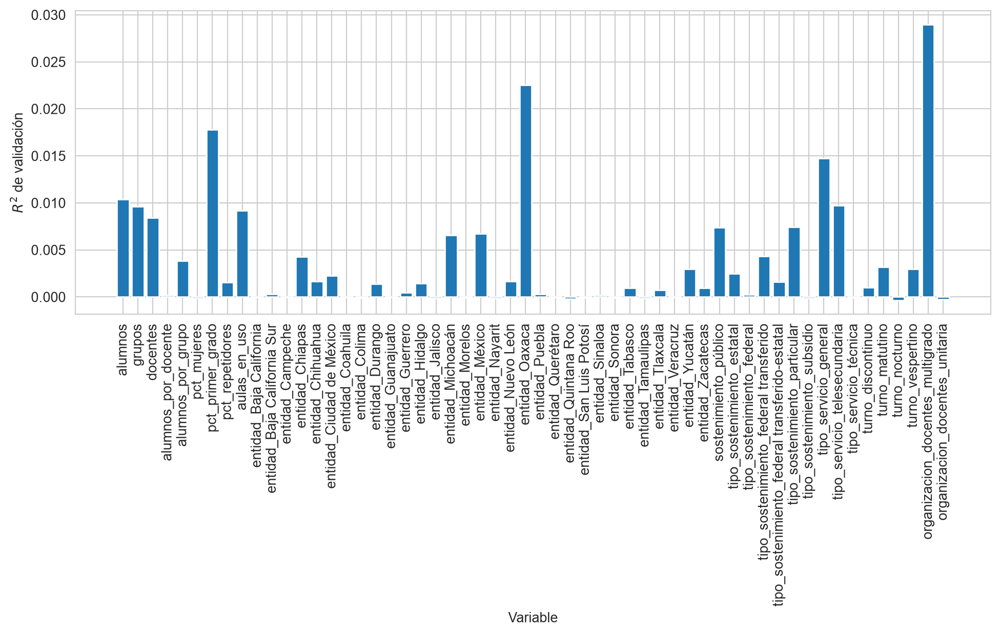
Nota
El algoritmo de selección hacia adelante y hacia atrás se implementa en la clase SequentialFeatureSelector. Para que el procedimiento no tarde, se pide seleccionar diez variables.
seq = SequentialFeatureSelector(LinearRegression(), n_features_to_select=10,
direction='forward', scoring='r2',
cv=kfold, n_jobs=-1).fit(T, y_t)
adelante = columnas[seq.get_support()]Las variables que selecciona el procedimiento hacia adelante son grupos, pct_primer_grado, entidad_Chiapas, entidad_Chihuahua, entidad_Durango, entidad_Michoacán, entidad_Oaxaca, tipo_servicio_general, turno_matutino, organizacion_docentes_multigrado. La selección hacia atrás se obtiene con direction='backward': empieza con todas las variables y elimina una a la vez, la que menos deteriora el rendimiento. Con \(56\) variables es mucho más lenta que la selección hacia adelante, pues cada eliminación evalúa casi todas las variables en cada una de las iteraciones de validación cruzada, y por eso no se ejecuta aquí; como ambos son algoritmos voraces, cada uno llega a un óptimo local distinto y las variables que selecciona la versión hacia atrás no tienen por qué coincidir con las de la versión hacia adelante.
3.8.2.1 Ventajas y Limitaciones
Una de las ventajas de la selección hacia atrás y adelante es que el algoritmo termina a lo más cuando se han analizado todas las variables, esto es, para un problema en \(\mathbb R^d\) se analizarán un máximo de \(d\) variables. La principal desventaja es que estos algoritmos son voraces, es decir, toman la mejor decisión en el momento, lo cual tiene como consecuencia que solo puedan garantizar llegar a un máximo local y en ocasiones este máximo local no corresponde al máximo global. Complementando esta idea, en un problema \(\mathbb R^d\) se tiene un espacio de búsqueda de \(2^d - 1\) subconjuntos de variables; en los algoritmos vistos se observa un máximo de \(d\) elementos de ese total.
3.8.3 Selección mediante Modelo
Existen algoritmos de aprendizaje supervisado donde sus parámetros indican la importancia que tiene cada característica en el problema. Considerando que las variables están estandarizadas, el valor absoluto de un coeficiente de una regresión lineal indica el efecto que tiene esa variable en el resultado y permite ordenarlas por importancia. La clase SelectFromModel selecciona las características que el modelo considera más importantes; con max_features se indica cuántas y prefit=True indica que el modelo ya está entrenado. El siguiente código lo ilustra con el Lasso del \(\lambda\) óptimo.
lasso_opt = Lasso(alpha=lambda_opt, max_iter=5000).fit(T, y_t)
sel = SelectFromModel(lasso_opt, max_features=4,
threshold=-np.inf, prefit=True)
cuatro = columnas[sel.get_support()]Las cuatro variables con mayor coeficiente en valor absoluto son pct_primer_grado, entidad_Oaxaca, turno_vespertino, organizacion_docentes_multigrado. Habiendo descrito el procedimiento, es necesario encontrar cuál es el número de variables que produce el mejor rendimiento. Para esto se realizan \(k\) iteraciones de validación cruzada (Sección 2.5.1), donde se varía el número de variables y en cada caso se mide el rendimiento con \(R^2\) (Sección 2.4).
perf_sel = []
for dim in range(2, T.shape[1] + 1):
modelo = SelectFromModel(lasso_opt, max_features=dim,
threshold=-np.inf, prefit=True)
Dt = modelo.transform(T)
hy_v = np.zeros_like(y_t)
for tr, vs in kfold.split(Dt):
m_sel = LinearRegression().fit(Dt[tr], y_t[tr])
hy_v[vs] = m_sel.predict(Dt[vs])
perf_sel.append(dict(r2=r2(y_t, hy_v), numero=dim))
perf_sel = pd.DataFrame(perf_sel)La Figura 3.10 muestra el \(R^2\) en validación cruzada desde el modelo con las dos variables más importantes hasta el que usa todas. El rendimiento pasa de \(0.0520\) con dos variables a \(0.0961\) con diez, y llega a un máximo de \(0.1153\) con \(37\) variables; con todas las variables vale \(0.1142\). Es decir, el rendimiento mejora rápidamente con las primeras variables y después se estabiliza, de manera que agregar las últimas casi no lo modifica.
Código
fig, ax = plt.subplots(figsize=(6, 4))
ax.plot(perf_sel.numero, perf_sel.r2)
_ = ax.set(xlabel='Número de variables', ylabel='$R^2$ de validación')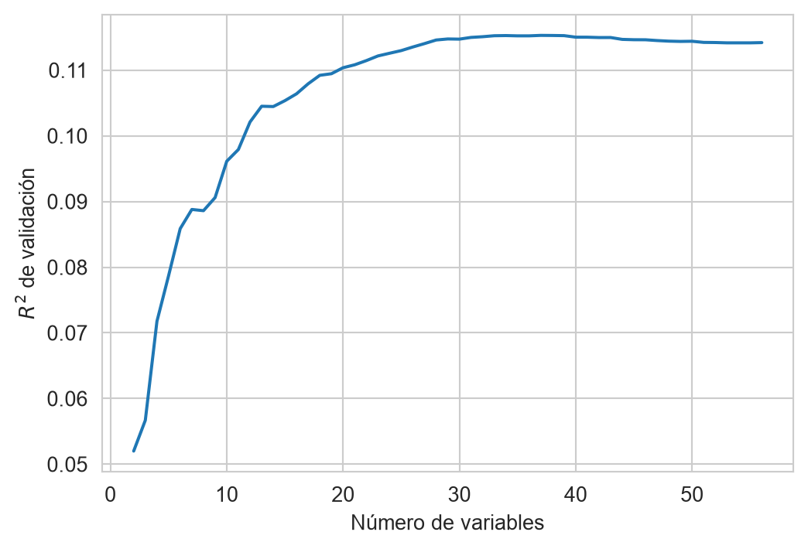
3.9 Los Coeficientes no se Interpretan Causalmente
Lasso y Ridge son útiles para predecir, pero sus coeficientes no se leen como los de MCO en un estudio de efectos. La razón es que las variables que Lasso conserva no son estables: con variables correlacionadas, pequeños cambios en la muestra cambian la variable que entra y la que sale. El siguiente código lo muestra ajustando LassoCV en \(10\) submuestras aleatorias del \(50\%\) de \(\mathcal T\) y registrando qué variables tienen un coeficiente distinto de cero, y el \(R^2\) de cada modelo en el conjunto de prueba.
seleccion = []
r2_sub = []
for _ in range(10):
idx = rng.choice(T.shape[0], size=T.shape[0] // 2, replace=False)
modelo = LassoCV(cv=5, max_iter=5000).fit(T[idx], y_t[idx])
seleccion.append(modelo.coef_ != 0)
r2_sub.append(r2(y_g, modelo.predict(G)))
seleccion = np.array(seleccion)
frecuencia = seleccion.mean(axis=0)La Figura 3.11 muestra la frecuencia con la que cada variable fue seleccionada. De las \(56\) variables, \(31\) entran en las \(10\) submuestras y \(25\) entran en algunas y en otras no, mientras que el \(R^2\) en el conjunto de prueba se mantiene entre \(0.1358\) y \(0.1436\).
Código
orden = np.argsort(frecuencia)[::-1]
fig, ax = plt.subplots(figsize=(12, 4))
ax.bar(range(len(orden)), frecuencia[orden], color=PALETTE(1))
ax.set_xticks(range(len(orden)))
ax.set_xticklabels(columnas[orden], rotation=90)
_ = ax.set(xlabel='Variable', ylabel='Frecuencia de selección')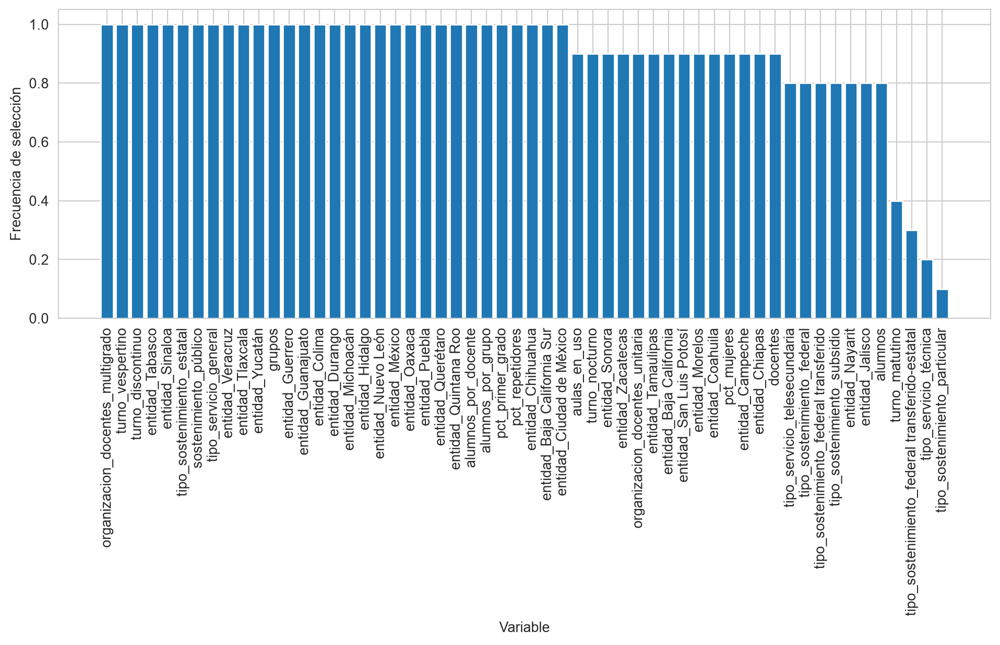
Varias variables entran y salen según la muestra aunque el rendimiento sea casi idéntico. Es el efecto Rashomon de Breiman (2001), que existen muchos modelos distintos con la misma capacidad de predicción, y es también el hallazgo del ejemplo de los precios de la vivienda de Mullainathan y Spiess (2017). La conclusión es que un coeficiente de Lasso (o de Ridge) dice cuánto contribuye esa variable a predecir dado el resto de variables que el algoritmo eligió, y no cuál sería el efecto de modificarla; con variables correlacionadas, la que sale puede ser una sustituta de la que importa.
Hay un caso donde la selección con Lasso sí es un problema para quien busca un efecto. Cuando lo que interesa es el efecto de una variable (un tratamiento) y Lasso se usa para elegir los controles, seleccionar con un solo Lasso de \(y\) sesga la estimación, porque omite controles que predicen poco \(y\) pero mucho el tratamiento. Belloni et al. (2014) proponen la post-double-selection, que selecciona los controles que predicen \(y\) y los que predicen el tratamiento. Ese procedimiento se desarrolla en el capítulo de Aprendizaje Computacional e Inferencia Causal (en preparación), y la interpretación de los modelos predictivos se trata en el capítulo de Interpretabilidad y Equidad (en preparación).
TipActividad
Lea las secciones sobre regularización de Mullainathan y Spiess (2017) y la introducción de Belloni et al. (2014). Para un policy paper en el que usted quiera estimar el efecto de un programa de becas sobre el abandono escolar, escriba qué variable sería el “tratamiento” y cuáles los controles, y argumente si el problema es de \(\hat y\) o de \(\hat\beta\).
3.10 Focalización: un Problema de Política de Predicción
Un programa social con recursos limitados necesita decidir a qué hogares dirigirse. Verificar el ingreso de cada hogar es costoso, por lo que muchos programas usan una prueba de medios sustituta (proxy means test): se predice si un hogar es pobre con pocas variables observables de la vivienda y el hogar, porque cada variable que se incluye hay que verificarla en campo. Los datos son los de Pobreza del apéndice (Sección B.1.1).
Es un problema de clasificación, no de regresión: el objetivo pobre_ingresos es binario. Se usa regresión logística con penalización \(L_1\) como una caja negra; el modelo se describe en la Sección 7.5 y aquí basta saber que fit y predict funcionan igual y que la penalización \(L_1\) vuelve cero algunos coeficientes, como en Lasso. En scikit-learn el hiperparámetro es C, el inverso de \(\lambda\): un valor pequeño de C es una penalización más fuerte. Se codifica y se estandariza igual que antes; no se usa el factor de expansión (factor) porque el objetivo es la decisión por hogar y no una estimación de la población.
pobreza = pd.read_csv(f'{URL_DATOS}/enigh_pobreza.csv.gz')
Xp = pd.get_dummies(pobreza.drop(columns=['pobre_ingresos', 'factor']),
drop_first=True, dtype=float)
columnas_p = Xp.columns
yp = pobreza['pobre_ingresos'].to_numpy()
Tp, Gp, yp_t, yp_g = train_test_split(Xp.to_numpy(), yp, test_size=0.2,
random_state=0, stratify=yp)
escala_p = StandardScaler().fit(Tp)
Tp = escala_p.transform(Tp)
Gp = escala_p.transform(Gp)La matriz de diseño tiene \(N=\) \(89988\) hogares y \(d=\) \(129\) columnas, y \(32.7\%\) de los hogares son pobres por ingresos. El siguiente código ajusta el modelo para seis valores de C y mide, en el conjunto de prueba, cuántas variables conserva el modelo, la cobertura (recall) y la precisión.
Cs = [0.001, 0.003, 0.01, 0.03, 0.1, 1]
resultados = []
modelos_p = []
for C in Cs:
clf = LogisticRegression(penalty='l1', C=C, solver='liblinear',
max_iter=1000).fit(Tp, yp_t)
hy_p = clf.predict(Gp)
modelos_p.append(clf)
resultados.append(dict(C=C, variables=int((clf.coef_ != 0).sum()),
cobertura=recall(yp_g, hy_p),
precision=precision(yp_g, hy_p)))
resultados = pd.DataFrame(resultados)C |
Variables | Cobertura | Precisión |
|---|---|---|---|
| \(0.001\) | \(34\) | \(0.5370\) | \(0.7239\) |
| \(0.003\) | \(67\) | \(0.5756\) | \(0.7282\) |
| \(0.01\) | \(101\) | \(0.5914\) | \(0.7236\) |
| \(0.03\) | \(115\) | \(0.5960\) | \(0.7229\) |
| \(0.1\) | \(122\) | \(0.5970\) | \(0.7219\) |
| \(1.0\) | \(128\) | \(0.5982\) | \(0.7220\) |
Código
fig, ax = plt.subplots(figsize=(6, 4))
ax.plot(resultados.variables, resultados.cobertura, marker='o',
color=PALETTE(1), label='Cobertura')
ax.plot(resultados.variables, resultados.precision, marker='o',
color=PALETTE(3), label='Precisión')
ax.legend()
_ = ax.set(xlabel='Número de variables', ylabel='Medida en el conjunto de prueba')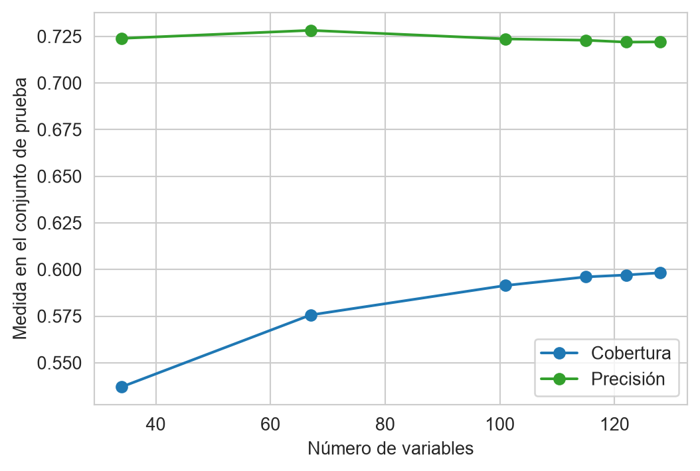
La Tabla 3.2 y la Figura 3.12 muestran que con \(34\) variables se alcanza una cobertura de \(0.5370\), frente a \(0.5982\) con \(128\) variables; con \(67\) variables la cobertura es \(0.5756\), \(96.2\%\) de la que se logra con todas. La precisión casi no cambia. Reducir el número de variables cuesta, entonces, algo de cobertura, y la política debe decidir cuánta está dispuesta a perder a cambio de verificar menos información en campo. Las variables con mayor coeficiente en valor absoluto en el modelo más pequeño son integrantes, menores_12, vehiculos, tipo_hogar_unipersonal, combustible_cocina_leña, personas_por_cuarto, televisores_digitales, computadoras, escolaridad_jefe_profesional completa, tiene_internet.
En términos de política, la cobertura es la proporción de hogares pobres que el programa alcanza y \(1 -\) precisión es la proporción de beneficiarios que no son pobres; son los errores de exclusión y de inclusión, respectivamente. El modelo se evaluó con el umbral que usa predict por omisión; qué umbral usar cuando ambos errores cuestan distinto se trata en Capítulo 4.
Actividades
TipActividad
Repita el procedimiento del capítulo (MCO, Ridge y Lasso con \(\lambda\) seleccionado por validación cruzada, y comparación con CompStats) con el conjunto de Territorio (Sección B.1.5): el objetivo es grado_promedio_escolaridad y se descartan clave_ageb, municipio, pct_viv_internet, pct_sin_servicio_salud y pct_jefatura_femenina. Con un número pequeño de renglones y de variables la regularización debe notarse más que en Educación. Conteste: ¿qué sectores de establecimientos selecciona Lasso? ¿Cambian si se repite con otra partición?
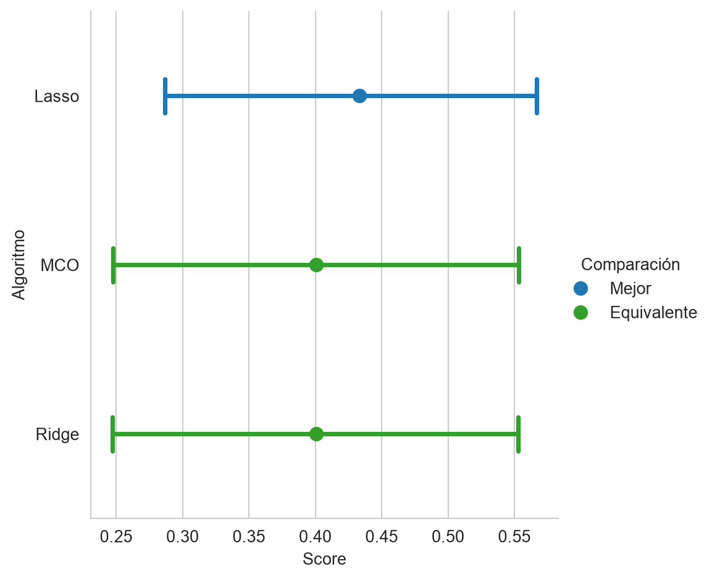
El resultado esperado se muestra en la Figura 3.13, con \(N=\) \(464\) AGEB y \(d=\) \(30\) variables; las variables que conserva Lasso son pob_total, viviendas_habitadas, est_agropecuario, est_alojamiento_alimentos, est_construccion, est_corporativos, est_educacion, est_energia_y_agua, est_esparcimiento, est_finanzas_seguros, est_gobierno_organismos, est_informacion_medios, est_inmobiliarios, est_manufactura, est_mineria, est_otros_servicios, est_salud_asistencia, est_servicios_apoyo, est_transporte, est_0_5_personas, est_6_10_personas, est_11_30_personas, est_51_100_personas, est_101_250_personas, est_251_o_mas_personas.